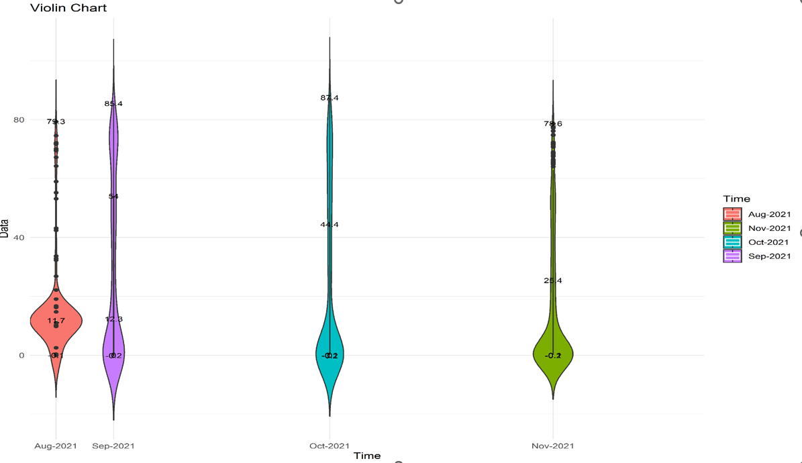

<section class="tile1" id="rt-historians">
    <div class="container">
        <div class="body" id="real-time-historian">
            <h3 data-aos="fade-up">Realtime Historian</h3>
            <div class="row" data-aos="fade-up">
                <div class="col-xl-6 col-lg-6 col-md-12 col-xs-12" >
                    <h5>Powerful Data Historian That Is:</h5>
                    <div class="topology">
                        
                        <!-- <div class="diagram-container">
                            <h5>suresh</h5>
                            <div class="central-node">
                                
                            </div>
                    
                            <div class="connector connector1"></div>
                            <div class="connector connector2"></div>
                            <div class="connector connector3"></div>
                            <div class="connector connector4"></div>
                            <div class="connector connector5"></div>
                            <div class="connector connector6"></div>
            
                            <div class="node node1">
                                <span class="border-animated">Highly Flexible As Main Data Historian</span>
                            </div>
                            <div class="node node2">Proven Scalability To 500,000 Tag Points</div>
                            <div class="node node3">Effectiveness With Multiple Redundant Sources</div>
                            <div class="node node4">Operational Mode Flexibility for Redundancy</div>
                            <div class="node node5">Powerful Timeseries Database</div>    
                            <div class="node node6">AI/ML Powered Tool For Predictive Analytics And Maintenance</div>    
                        </div> -->
                    </div>
                </div> 
                <div class="features col-xl-6 col-lg-6 col-md-12 col-xs-12" >
                    <h5 class="">Features</h5>
                    <ul class="circle-checkmark">
                        <li>Connectivity Protocol: OPC UA, Classic OPC, ODBC, Files, Other Data Sources</li>
                        <li>Redundant Connectivity Option</li>
                        <li>Dual Deadband Option: Smoothening, Archiving</li>
                        <li>Condition Based Snapshot/Exe Trigger</li>
                        <li>20+ Data Calculation: Maximum, Minimum, Average, Totalizer, Sum, Statistical Calculation, Incremental Calculation, Other Calculations</li>
                        <li>Query Builder With Automated Macros</li>
                        <li>Output Connectivity Options: OPC UA, Classic OPC, ODBC</li>
                    </ul>
                </div>            
            </div>
        </div>
        <div class="body" id="reporter">
            <h3 data-aos="fade-up">Reporter</h3>
            <div class="row">
                <div class="col-12" data-aos="fade-up">
                    <h5>Highly Configurable Excel And Web Based Reporting Tool That Is:</h5>
                    <div class="">
                        <ul class="arrow-checkmark">
                            <li>Used To Generate: Process Reports, Energy Grid Reports, Alarm Reports, Plant KPI Reports, Analytics Reports, Others</li>
                            <li>Direct Database Access For High Speed Query</li>
                            <li>Alarm Reports and Plant KPI Reports Per ISA 18.2 Alarm Analysis Standards And EEMUA 191 Metrics</li>
                            <li>Analytics Reports With Data Displays Such As:</li>
                        </ul>
                    </div>
                </div> 
                <div class="features col-12" data-aos="fade-up">
                   <div class="row">
                        <div class="col-12">
                            <table class="report-table">
                                <tbody>
                                    <tr>
                                        <td>Pie Chart</td>
                                        <td>Line Chart</td>
                                        <td>Bar Chart</td>
                                    </tr>
                                    <tr>
                                        <td>Scatter Chart</td>
                                        <td>Surface Chart</td>
                                        <td>Contour Chart</td>
                                    </tr>
                                    <tr>
                                        <td>Violin Chart</td>
                                        <td>Correlation Chart</td>
                                        <td>Density Chart</td>
                                    </tr>
                                    <tr>
                                        <td>Load Duration Curve</td>
                                    </tr>
                                </tbody>
                            </table>
                        </div>
                        <div class="col-xl-6 col-lg-6 col-md-12 col-xs-12">
                            <div class="swiper" #swiperContainer1 data-aos="zoom-in">
                                <div class="swiper-wrapper">
                                <div class="swiper-slide">
                                    
                                </div>
                                <div class="swiper-slide">
                                    
                                </div>
                                <div class="swiper-slide">
                                    
                                </div>
                                <div class="swiper-slide">
                                    
                                </div>
                                <div class="swiper-slide">
                                    
                                </div>
                                <div class="swiper-slide">
                                    
                                </div>
                                </div>
                                <div class="swiper-pagination"></div>
                            </div>                    
                        </div>
                        <div class="col-xl-6 col-lg-6 col-md-12 col-xs-12">
                            <div class="swiper" #swiperContainer2 data-aos="zoom-in">
                                <div class="swiper-wrapper">
                                    <div class="swiper-slide">
                                        <video class="video-sec" autoplay="true" loop="true" preload="auto" >
                                            <source src="../../../assets/ae-report.mp4" type="video/mp4">
                                        </video>
                                    </div>
                                    <div class="swiper-slide">
                                        
                                    </div>
                                    <div class="swiper-slide">
                                        
                                    </div>
                                </div>
                            </div>
                        </div>
                        <div class="col-12" style="margin-top: 20px;">
                            <h5 class="">Features</h5>
                            <ul class="circle-checkmark">
                                <li>Excel Based Add-In</li>
                                <li>Optional Web Based Enterprise Level Tool</li>
                                <li>Ad-hoc Query Based Results Or Configurable Reports</li>
                                <li>Scheduled Report E-mailing Options</li>
                            </ul>
                        </div>
                   </div>
                </div>            
            </div>
        </div>
        <div class="body" id="rt-calc">
            <h3 data-aos="fade-up">RT Calculator</h3>
            <div class="row">
                <div class="col-12" data-aos="fade-up">
                    <h5>Advanced Calculation Tool To:</h5>
                    <div class="">
                        <ul class="arrow-checkmark">
                            <li>Build Complex And Complete Formulas As Block Diagrams</li>
                            <li>Build Powerful Libraries Of Calculations Using Arithmetic And Matrix Operations</li>
                        </ul>
                    </div>
                </div> 
                <div class="features col-12" data-aos="fade-up">
                   <div class="row">
                        <div class="col-12">
                            <h5 class="">Features</h5>
                            <ul class="circle-checkmark">
                                <li>Connectivity Protocol: OPC UA. Classic OPC, Data Historian</li>
                                <li>Utilize Existing Libraries Such As Tank Inventory, Heat Exchanger Duty, Unit Load Optimization, Antoine Equation, Volume To Mass Flow Conversion Etc.</li>
                                <li>Multi Mode Operability: Manual Or Auto</li>
                            </ul>
                        </div>
                    </div>
                </div>
            </div>
        </div>
    </div>
</section>